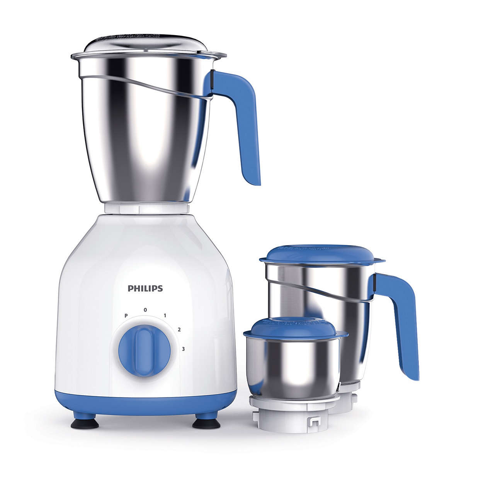

BREAKFAST
ROYAL BREAKFAST SOUP
This will be more tasty and tangy than any cola
Ingrediants :Apple, Bottle Gourd, Tulsi leaves, Aamla, Pan, Dalcheeni, Saendha Namak, Kali Mirch powder, Piece of Haldi , Methi powder
Step 1 :If you dont know ur kitchen ...please search mixer in your kitchen

Step 2 :Great ! Now you have your mixer please search for an Apple in your fridge
Step 3 :Great ! Now you have your mixer please search for bottle gourd ...Well botlle gourd is a vegitable..please add 1 cup of it into mixer
Don't worry our recipe wont taste like a botllegourd juice

Step 4 :Now bring one Betal Leaf(Pan) from market or Tulsi Leaves from neighbourer's garden and add into mixer
Don't worry our recipe wont taste like a botllegourd juice
Step 5 : Final Step ... mix 1/4 spoon each of Dalcheeni powder, Kali mirch, saendha namak, haldi, methi powder..now add some water and switch on your mixer ..here you go
Now Drink it dear, if you like it...you welcome